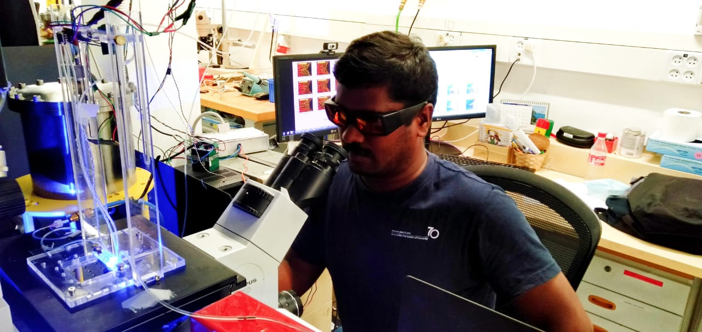

Research Associate at Indian Institute of Science (IISc), Bengaluru. My research focuses on soft matter physics, polymer science, microfluidics, and frontal polymerization. I work on understanding the physics of complex fluids and smart materials for structural applications.
Spinning and tumbling of micron-sized triangles in micro-channel shear flow
Elastic instability in viscoelastic microfluidic flow
Frontal polymerization propagation experiment
Indian Institute of Science
Bengaluru, Karnataka, India
Email: your-email@example.com